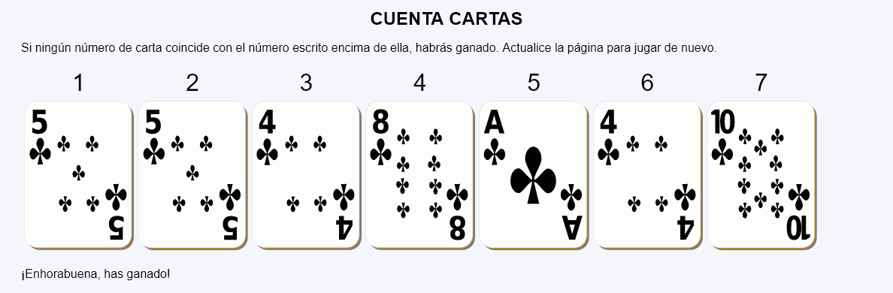
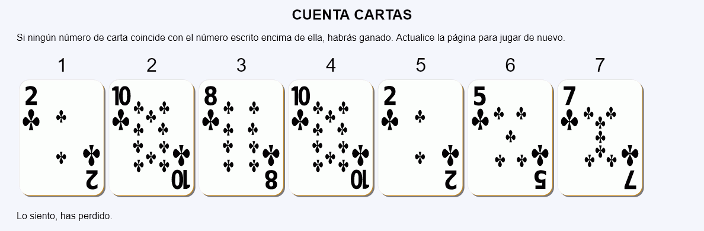

Cuenta cartas - Ejemplo de programa
Nota: El día del examen los alumnos no tienen acceso a este ejemplo, solamente tienen acceso a las capturas del apartado anterior.
Un ejemplo de programa puede probarse en la ventana siguiente:
En este ejercicio se debe crear un programa que muestre una partida del solitario "Cuenta cartas".


<table>
<tbody>
<tr>
<td style="text-align: center; font-size: 200%">1</td>
<td style="text-align: center; font-size: 200%">2</td>
<td style="text-align: center; font-size: 200%">3</td>
<td style="text-align: center; font-size: 200%">4</td>
<td style="text-align: center; font-size: 200%">5</td>
<td style="text-align: center; font-size: 200%">6</td>
<td style="text-align: center; font-size: 200%">7</td>
</tr>
<tr>
<td><img src="img/cartas/t4.svg" alt="4" height="200"></td>
<td><img src="img/cartas/t1.svg" alt="1" height="200"></td>
<td><img src="img/cartas/t5.svg" alt="5" height="200"></td>
<td><img src="img/cartas/t9.svg" alt="9" height="200"></td>
<td><img src="img/cartas/t8.svg" alt="8" height="200"></td>
<td><img src="img/cartas/t1.svg" alt="1" height="200"></td>
<td><img src="img/cartas/t4.svg" alt="4" height="200"></td>
</tr>
</tbody>
</table>
<p>¡Enhorabuena, has ganado!</p>
Nota: El día del examen los alumnos no tienen acceso a este ejemplo, solamente tienen acceso a las capturas del apartado anterior.
Un ejemplo de programa puede probarse en la ventana siguiente: